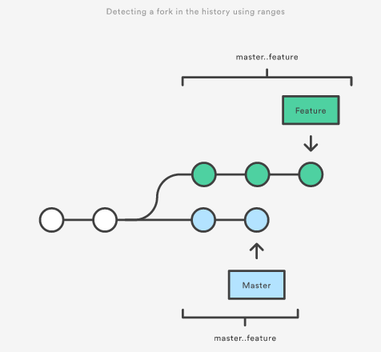

[译]git log进阶
格式化log输出
oneline
--oneline标记将每个commit压缩成一行. 默认情况下显示一个commit ID和commit描述的第一行. 输出如下:
0e25143 Merge branch 'feature' ad8621a Fix a bug in the feature 16b36c6 Add a new feature 23ad9ad Add the initial code base
decorate
许多时候知道commit是和哪一个分支或tag关联的是非常有用的. --decorate标记会让git log显示每个commit的引用(如:分支、tag等).
可以和其它的config选项结合使用. 例如, git log --oneline --decorate输出如下:
0e25143 (HEAD, master) Merge branch 'feature' ad8621a (feature) Fix a bug in the feature 16b36c6 Add a new feature 23ad9ad (tag: v0.9) Add the initial code base
从中可以看出第一个commit在master分支. 第二个commit在一个feature分支, 第四个commit被tag为v0.9.
diffs
git log有许多选项是为了展示每个commit的不同之处的. 最常用的两个是--stat和-p.
--stat显示每个commit中每个文件的添加的行数和删除的行数.这对我们了解一个commit大致有些什么修改非常有用. 下面的commit hello.py新增了67行, 删除了38行:
commit f2a238924e89ca1d4947662928218a06d39068c3
Author: John <john@example.com>
Date: Fri Jun 25 17:30:28 2014 -0500
Add a new feature
hello.py | 105 ++++++++++++++++++++++++-----------------
1 file changed, 67 insertion(+), 38 deletions(-)
文件名后面的＋－符号是这个文件相对的增加和删除行数.
如果你想看每个commit具体修改了些什么可以使用git log -p, 结果如下:
commit 16b36c697eb2d24302f89aa22d9170dfe609855b
Author: Mary <mary@example.com>
Date: Fri Jun 25 17:31:57 2014 -0500
Fix a bug in the feature
diff --git a/hello.py b/hello.py
index 18ca709..c673b40 100644
--- a/hello.py
+++ b/hello.py
@@ -13,14 +13,14 @@ B
-print("Hello, World!")
+print("Hello, Git!")
shortlog
git shortlog是一个特殊版本的git log, 他的目的是为了创建一个发布的通知. 将commit按照作者分组, 显示每个commit的第一行描述. 通过他你很容易看到谁做了些什么.
例如, 两个开发者为一个项目贡献了5个commit, git shortlog的输出如下:
Mary (2):
Fix a bug in the feature
Fix a serious security hole in our framework
John (3):
Add the initial code base
Add a new feature
Merge branch 'feature'
默认情况下git shortlog按照作者名排序, 你可以使用-n按照每个作者的commit数量来排序.
graph
--graph标记会画出一个ASCII图展示commit历史的分支结构. 通常和--oneline --decorate结合使用:
git log --graph --oneline --decorate
* 0e25143 (HEAD, master) Merge branch 'feature' |\ | * 16b36c6 Fix a bug in the new feature | * 23ad9ad Start a new feature * | ad8621a Fix a critical security issue |/ * 400e4b7 Fix typos in the documentation * 160e224 Add the initial code base
星号告诉你commit在哪一个branch上,上面的输出告诉我们23ad9ad 和 16b36c6在一个主题分支, 其它的在master分支.
自定义输出
可以使用--pretty=format:"<string>"来自定义输出.
例如%cn代表commiter name, %h代表commit hash的缩写, %cd代表commiter date.
git log --pretty=format:"%cn committed %h on %cd"
输出如下:
John committed 400e4b7 on Fri Jun 24 12:30:04 2014 -0500 John committed 89ab2cf on Thu Jun 23 17:09:42 2014 -0500 Mary committed 180e223 on Wed Jun 22 17:21:19 2014 -0500 John committed f12ca28 on Wed Jun 22 13:50:31 2014 -0500
筛选commit历史
按数量
可以使用-n来限制输出的数量. 下面的例子只显示最近3个commit.
git log -3
按日期
可以使用--after或--before来按照日期筛选. 下面的例子只显示2014年7月1号之后的commit(包含7月1号).
git log --after="2014-7-1"
还可以使用一个相对的时间, 例如"1 week ago"和"yesterday""
git log --after="yesterday"
如果看某个时间段的commit可以同时使用--after和--before. 下面的例子显示2014年7月1日到2014年7月4日之间的commit:
git log --after="2014-7-1" --before="2014-7-4"
注意--since --until和 --after --before是一个意思.
按作者
git log --author="John"
显示John贡献的commit. 作者名不需要精确匹配--只需要包含就行了.
还可以使用正则表达式. 下面的命令搜索Marry和John贡献的commit.
git log --author="John\|Mary"
注意这个--author不仅包含名还包含email, 所以你可以用这个搜索email.
按commit描述
例如, 如果你的团队会在每个commit描述里面加上相关的issue号, 你可以使用下面的命令查找跟某个issue相关的commit:
git log --grep="JRA-224"
还可以传入-i用来忽略大小写.
按文件
有时你可能只对某个文件的修改感兴趣, 你只想查看跟某个文件相关的历史信息, 你只需要插入你感兴趣文件的路径就可以了. 下面的例子只返回和foo.py或bar.py相关的commit:
git log -- foo.py bar.py
这里的--是告诉Git后面的参数是文件路径而不是branch的名字. 如果后面的文件路径不会和某个branch产生混淆, 你可以省略--.
按内容
有时你想搜索和新增或删除某行代码相关的commit. 可以使用 －S"<string>". 下面的例子假设你想知道Hello, World!这句话是什么时候加入到项目里去的, 你可以使用下面的命令:
git log -S"Hello,World!"
如果你想使用正则表达式去匹配而不是字符串, 那么你可以使用-G代替-S.
这是一个非常有用的debug工具, 使用他你可以定位所有跟某行代码相关的commit. 甚至可以查看某行是什么时候被copy的, 什么时候移到另外一个文件中去的.
按范围
可以查看某个范围的commit:
git log <since>..<until>
这个命令非常有用当你使用branch做为range参数的时候. 能很方便的显示2个branch之间的不同. 看看下面的命令:
git log master..feature
master..feature这个range包含了在feature有而在master没有的所有commit. 如图所示(图中最下面的master..feature应该错了, 是feature..master才对):

feature..master包含所有master有但是feature没有的commit.
过滤merge commit
默认情况下git log会输出merge commit. 你可以通过--no-merges标记来过滤掉merge commit:
git log --no-merges
如果你只对merge commit感兴趣可以使用--merges:
git log --merges